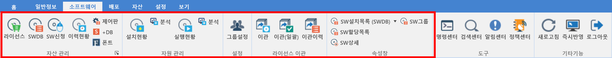

5. 소프트웨어
5. 소프트웨어
Source: https://www.sweeper.or.kr/etc/manual/5.html
5. 소프트웨어


MENU | 소프트웨어
SWeeper
기업에서 구매한 소프트웨어 라이선스를 등록하고 사용자에게 할당/회수를 하며, 소프트웨어 사용현황을 확인하는 등의 효율적인 소프트웨어 관리를 제공합니다.
| THE SOFTWARE MANAGEMENT |
특히 사전 보유된 소프트웨어 DB와 연계하여 관리자 운영 편의성을 높였습니다.
소프트웨어 저작권 협회(SPC) DB 연동을 통한 현황 파악이 가능하며, 윈도우 제어판 정보 현황도 함께 비교 분석 가능합니다.
다양한 통제 정책 설정을 통해 불법 소프트웨어 사용을 쉽게 통제할 수 있습니다. 그러나 통제 남용은 강한 사용자 불만을 야기할 수 있으므로 충분한 사전 공지 후 적용하는 것이 바람직합니다.
한국소프트웨어저작권협회(SPC) SWeeper 소프트웨어 관리는 효과적이고 합리적인 소프트웨어 라이선스 운영을 가능하게 합니다.

© Copyright SWeeper Inc.. All Rights Reserved